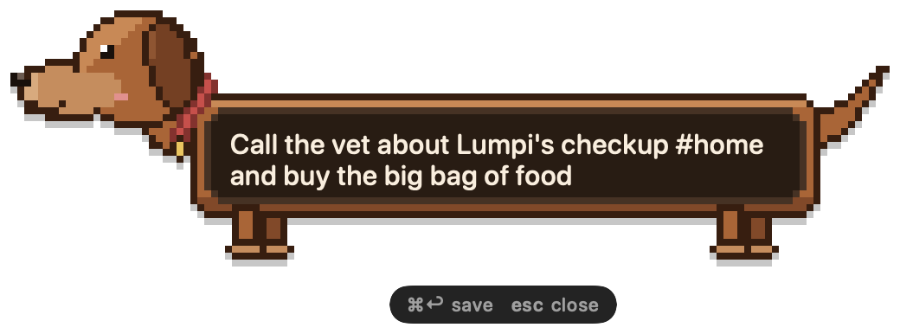
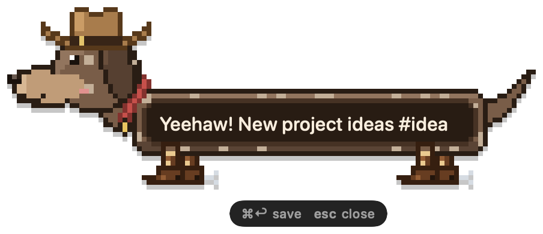

One shortcut away
⌥Space from any app. Your draft survives Esc, clicking away and even quitting.
doxie lives in your Mac's menu bar. Press ⌥Space, type, and the dachshund stretches to fit your note. Press ⌘S and it's saved. Everything stays on your Mac.
Free · macOS 14 or later · Apple silicon and Intel

Open the inbox and your ten newest notes play in a pixel park. They trot around the pond, gallop, sniff, dig and doze off, each wearing the look its note was written with. Hover one to see its note, click it to open it. Try it: hover the dogs.
Below the park, your notes are a quiet list: each one with its own little dog, its tags and when you wrote it. Filter by Pinned, Archive or any #tag, and click a note to edit it.

⌥Space from any app. Your draft survives Esc, clicking away and even quitting.
Type #ideas anywhere in a note. Filter by tag, or press ⌥⇧Space to find any note in a second.
Save whatever you just copied as a note, with its own shortcut. Nothing even opens.
Notes are written as plain Markdown files, straight into your Obsidian vault. Edits you make there are never overwritten.
Each note becomes a page in your Notion database, with its tags and date. Offline notes catch up later.
Notes sync through iCloud Drive. If two Macs change the same note, both versions are kept.
Start with /todo, /pin or /append to make a checklist, pin the note or add to your last one.
Notes are stored in a SQLite database on your Mac. No account, no cloud, no tracking.
Type /remind tomorrow 9:00 in front of a note. When it's time, you get a notification and the note's dog rings a little bell.
doxie is free to use, with unlimited notes. Pro adds integrations and a wardrobe for your dachshund. Pay once, keep it.
| Free | Pro | |
|---|---|---|
| Unlimited local notes | ✓ | ✓ |
| Global shortcut, quick search, tags | ✓ | ✓ |
| Markdown / Obsidian export folders, with tag filters in Pro | 1 | Many |
| Notion sync | ✓ | |
| Reminders with notifications | ✓ | ✓ |
| Repeating reminders: every day, weekday, week or month | ✓ | |
Capture actions: /todo, /pin, /append | ✓ | |
| Sync between your Macs (iCloud Drive) | ✓ | |
| Coats and accessories: party hat, glasses, scarf, bow tie, cowboy hat & boots | ✓ | |
| Park themes: Autumn, Snow, Night | ✓ |

Get Doxie ProOne-time purchase for up to 3 Macs, no subscription. Payment and licensing by Lemon Squeezy; your license key unlocks Pro in doxie's settings.


On your Mac, in a SQLite database in your Library folder. doxie has no servers and no account. If you turn on export or sync, notes are written to the folders or the Notion workspace you choose.
Yes. Capturing, searching and exporting to folders all work offline. Notion sync catches up when you're back online.
No. You pay once and keep Pro, including all 1.x updates. Your notes always stay yours, with or without Pro.
Yes, on up to 3 Macs. To move it to another Mac, choose Deactivate on This Mac in doxie's settings.
doxie checks for updates once a day and asks before installing. You can turn this off in Settings.
If macOS says doxie can't be checked for malicious software, open System Settings → Privacy & Security, scroll down and click Open Anyway. (On macOS 14 you can also right-click doxie in Applications and choose Open.) You only need to do this once. See Installing.
Because notes come in all lengths, and so do dachshunds.
More answers in the documentation.